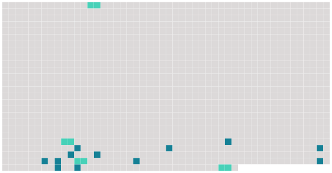

Longueur nb maillons : 16 mentions |
 |
Isabelle prit place à gauche, la soubrette se mit en face, [la duègne] s'établit à côté du Pédant, Léandre et le Matamore s'assirent où ils voulurent. [24 phrases] [Dame Léonarde] , la mère noble de la troupe, était vêtue tout de noir comme une duègne espagnole. Des coiffes d'étamine encadraient [sa] figure grasse à plusieurs mentons, pâlie et comme usée par quarante ans de fard. Des tons d'ivoire jauni et de vieille cire blêmissaient [son] embonpoint malsain, venu plutôt de l'âge que de la santé. [Ses] yeux, sur lesquels descendait une paupière molle, avaient une expression d'astuce, et faisaient comme deux taches noires dans [sa] figure blafarde. Quelques poils commençaient à obombrer les commissures de [ses] lèvres, quoiqu' [elle] les arrachât soigneusement avec des pinces. [1 phrases] [Comédienne] depuis [son] enfance, [dame Léonarde] en savait long sur une carrière dont [elle] avait successivement rempli tous les emplois jusqu'à celui de duègne, accepté si difficilement par la coquetterie, toujours mal convaincue des ravages du temps.
[Léonarde] avait du talent, et, toute vieille qu' [elle] était, [savait] se faire applaudir, même à côté des jeunes et jolies, toutes surprises de voir les bravos s'adresser à [cette sorcière] |
 |
La ressource peut être téléchargée sur la page Ortolang
Si vous avez des questions ou vous voyez des erreurs, merci d'envoyer un mail à silvia.federzoni89@gmail.com
Site développé par S. Federzoni (contact)